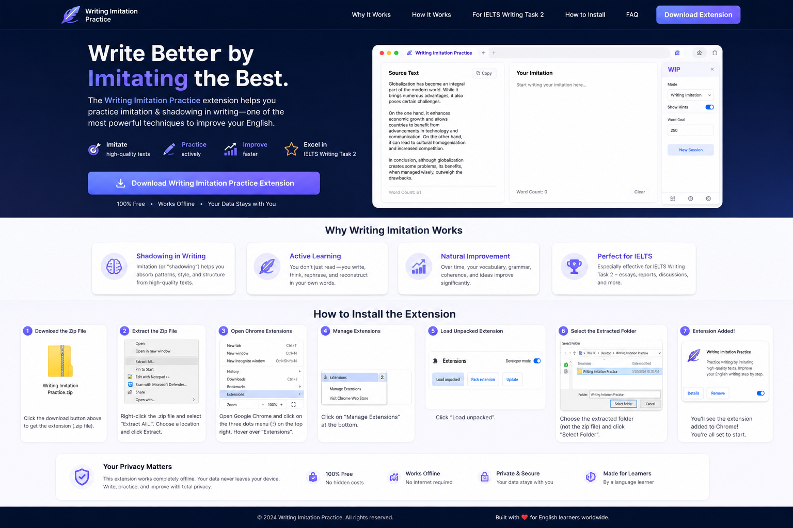

Nima uchun yozish sekin rivojlanadi?
Ko‘pchilik talaba ingliz tilida ko‘p yozishga harakat qiladi. Biroq, ular gaplarni to‘g‘ri tuzishni, fikrlarni bog‘lashni, akademik so‘zlarni ishlatishni va tabiiy yozishni to‘liq bilmaydi. Natijada ular ko‘p yozadi, lekin yozuv sifati sekin o‘sadi.
Yozish bu faqat fikr bildirish emas — bu gap tuzilmalari, bog‘lovchilar, akademik so‘zlar va tabiiy ifodalarni ichki o‘zlashtirish jarayonidir.

Shadowing va imitation nima uchun ishlaydi?
Speaking o‘rganishda shadowing va imitation usullari juda mashhur. O‘quvchi kuchli nutq namunalarini tinglaydi, pauza qiladi, takrorlaydi va talaffuz, ritm, intonatsiya hamda tabiiy ifodalarni o‘zlashtiradi.
Bu usulning kuchi shundaki, o‘quvchi tilni quruq qoida sifatida emas, balki tayyor namuna orqali o‘rganadi. U ko‘radi, takrorlaydi va keyin o‘z nutqida qo‘llay boshlaydi.
Endi shu mantiq yozuvga ko‘chirildi
Writing Imitation Practice aynan shu g‘oyani writing uchun moslashtiradi. Speaking’da siz matnni tinglab takrorlasangiz, bu yerda siz yaxshi yozilgan matnlarni o‘qib, tushunib, keyin xotiradan yozasiz.
Ma’no: matnni passiv o‘qish emas, balki ongli ravishda gap tuzilmasi va iboralarni o‘zlashtirib, keyinchalik o‘z writing’ingizda tabiiy qo‘llashdir.
Kengaytma qanday ishlaydi?
Matn joylaysiz: IELTS Writing Task 2 esse, akademik paragraf yoki boshqa sifatli inglizcha matnni kengaytmaga joylaysiz.
Gaplarga ajratish: Dastur matnni bir-biridan mustaqil gaplarga ajratadi, shunda siz har bir gapni alohida tahlil qilasiz.
O‘qish va tushunish: Har bir gapni yozishdan oldin uni diqqat bilan o‘qiysiz. Gapning mazmuni, tuzilishi va akademik so‘zlarga e’tibor berasiz.
Noma’lum so‘zlarni o‘rganish: Bilinmagan so‘zlarni belgilab, ta’rifini ko‘rish yoki Word List’ga saqlash mumkin.
Matn yashiriladi: Yozishni boshlaganingizda original gap yashiriladi. Siz uni xotiradan yozasiz.
Xatolar ko‘rsatiladi: Agar xato qilsangiz, dastur aynan qaerda xato qilganingizni ko‘rsatadi va siz gapni qayta yozasiz.
Bitta gapda bitta xato: Xato ko‘payib ketmasligi uchun, gapni faqat bitta xato bilan yozganingizda keyingi gapga o‘tasiz.
Keyingi gapga o‘tish: To‘g‘ri yozilgandan so‘ng, navbatdagi gapga o‘tasiz.
Imlo xatolari tizimi: Qilgan spelling xatolaringiz alohida ro‘yxatda saqlanadi.
So‘zlar Word List’ga qo‘shiladi: Qiziqarli so‘zlarni Word List’ga saqlashingiz mumkin.
Takrorlash bilan mustahkamlash: Barcha so‘zlar va xatolar keyingi kunlarda takrorlab eslatiladi.
Maqsad — tez tugatish emas, har bir gapni to‘g‘ri va ongli yozishga o‘rganish.
Imlo xatolarini mustahkamlash
- Copy — so‘zning to‘g‘ri yozilishini ko‘rib nusxasini yozish
- Reconstruct — harflarni bosib so‘zni qayta tuzish
- Recall — so‘z yashiriladi va xotiradan yozish
Takrorlash intervallari
- 1 kun
- 3 kun
- 7 kun
- 14 kun
- 30 kun
Bu yondashuv so‘zlarni uzoq muddatga eslab qolishga yordam beradi.
IELTS Writing Task 2 uchun
- Fikrlarni mantiqiy tartibda bayon qilish
- Akademik so‘zlardan tabiiy foydalanish
- Gaplarni bog‘lash va aniq yozish
- Model essaylar orqali mustahkamlash
Yaxshi yozish — tasodif emas, ongli mashq natijasi
Agar siz har kuni sifatli matnlar bilan ishlasangiz, ularni tushunib, gapma-gap xotiradan yozsangiz va xatolaringizni muntazam takrorlasangiz, writing ko‘nikmangiz tabiiy ravishda rivojlanadi.
Writing Imitation Practice shu jarayonni sodda, tartibli va samarali qiladi.
Kengaytmani yuklab olish